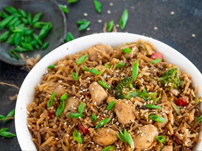

Chicken Teriyaki Fried Rice
Description
A savory and satisfying dish featuring tender chicken, sweet teriyaki sauce, and perfectly stir-fried rice with vegetables.
Prep Time: 1 Hour 45 minutes
Ingredients
- Chicken breast
- Teriyaki sauce
- Cooked rice
- Mixed vegetables (e.g., carrots, peas, bell peppers)
Directions
- Cook and dice the chicken breast until browned.
- Sauté garlic and onion in sesame oil until fragrant.
- Add mixed vegetables and stir-fry until tender.e
- Mix in the cooked rice and soy sauce, then stir-fry until well combined.
- Pour in teriyaki sauce and cooked chicken, then stir until everything is evenly coated and heated through.